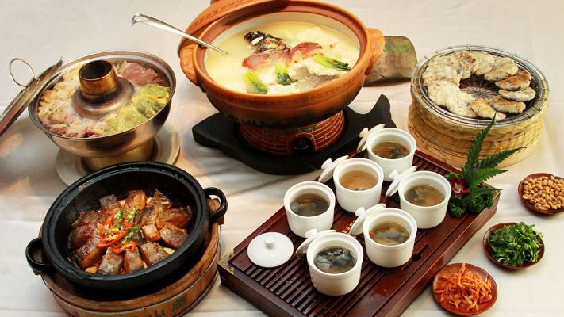
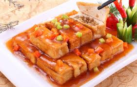
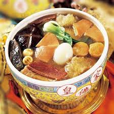
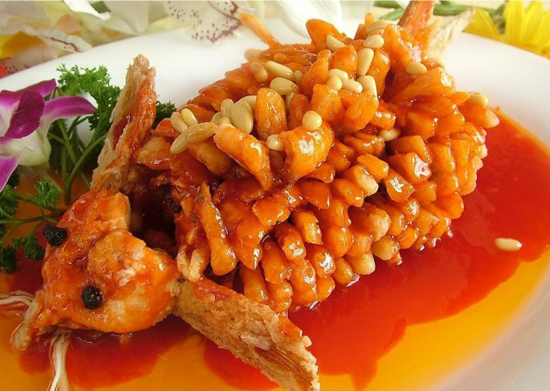
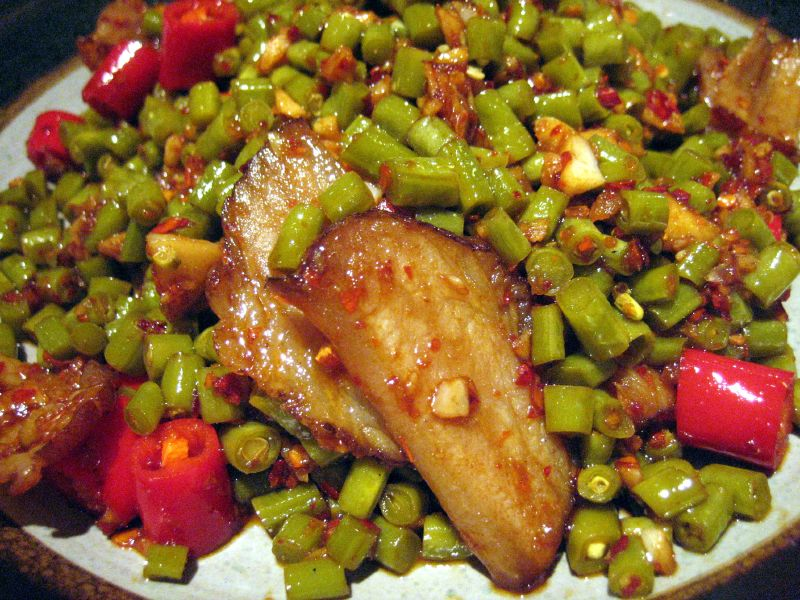
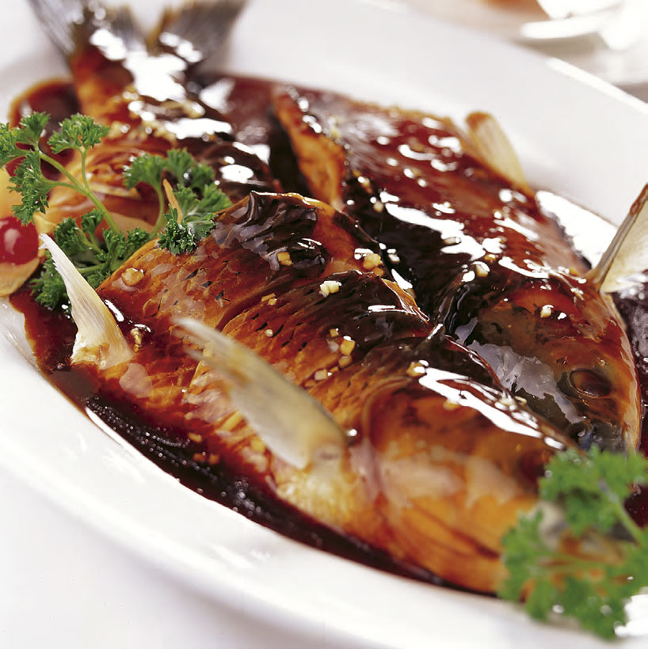

There are 6 more cuisines except for Cantonese cuisine and Sichuan cuisine. The pages will show the other 6 cuisines, which are, Anhui cuisine, Shandong cuisine, Fujian cuisine, Jiangsu cuisine, Hunan cuisine, Zhejiang cuisine.
Anhui cuisine is known for its use of wild herbs, from both the land and the sea, and simple methods of preparation. Braising and stewing are common cooking techniques. Frying and stir frying are used much less frequently in Anhui cuisine than in other Chinese culinary traditions. Anhui has ample uncultivated fields and forests, so the wild herbs used in the region's cuisine are readily available. Anhui cuisine is heavily associated with tofu, with Chinese folklore crediting the creation of tofu to the Han dynasty prince Liu An who hailed from Shou County (dubbed the "hometown of tofu"). According to Chinese legend, stinky tofu was created by Anhuinese scholar Wang Zhihe who sold his product in Beijing to make a living after failing the imperial examination. Anhui is the home of hairy tofu where it is a popular snack. (Source: Wikipedia)
Shandong cuisine is divided into two sub-regional styles: Jinan and Jiaodong. Shandong cuisine is known for its light aroma, freshness and rich taste. It puts emphasis on two types of broths, light and milky. Both broths are seasoned with scallions and go well with the freshness of seafood. Shandong cuisine is famous for its wide selection of material and use of different cooking methods. The raw materials are mainly domestic animals and birds, seafood and vegetables. The masterly cooking techniques include bao (quick frying), liu (quick frying with corn flour), pa (stewing), kao (roasting), zhu (boiling), and using sugar to make fruit and crystallising with honey. (Source: Wikipedia)
Fujian cuisine or Fujianese cuisine, also known as Min cuisine or Hokkien cuisine, is one of the native Chinese cuisines derived from the native cooking style of China's Fujian Province, most notably from the provincial capital, Fuzhou. Fujian cuisine is known to be light but flavourful, soft, and tender, with particular emphasis on umami taste, known in Chinese cooking as xianwei, as well as retaining the original flavour of the main ingredients instead of masking them. Many diverse seafood and woodland delicacies are used, including a myriad variety of local fish, shellfish and turtles, or indigenous edible mushrooms and bamboo shoots, provided by the coastal and mountainous regions of Fujian. The most commonly employed cooking techniques in the region's cuisine include braising, stewing, steaming and boiling. (Source: Wikipedia)
Jiangsu cuisine, also known as Su cuisine, is one of the Eight Culinary Traditions of Chinese cuisine. It is derived from the native cooking styles of Jiangsu Province. In general, Jiangsu cuisine's texture is characterised as soft, but not to the point of mushy or falling apart. In addition, Jiangsu cuisine also focuses on heating temperature. For example, the meat tastes quite soft but would not separate from the bone when picked up. As the style of Jiangsu cuisine is typically practised near the sea, fish is a very common ingredient in cooking. Other characteristics include the strict selection of ingredients according to the seasons, with emphasis on the matching colour and shape of each dish and using soup to improve flavour. (Source: Wikipedia)
Hunan cuisine, also known as Xiang cuisine, consists of the cuisines of the Xiang River region, Dongting Lake and western Hunan Province in China. It is one of the Eight Great Traditions of Chinese cuisine and is well known for its hot and spicy flavours, fresh aroma and deep colours. Common cooking techniques include stewing, frying, pot-roasting, braising and smoking. Due to the high agricultural output of the region, ingredients for Hunan dishes are many and varied. Known for its liberal use of chili peppers, shallots and garlic, Hunan cuisine is known for being purely hot, as opposed to Sichuan cuisine, to which it is often compared. Hunan cuisine is often spicier by pure chili content and contains a larger variety of fresh ingredients. (Source: Wikipedia)
Zhejiang cuisine, alternatively known as Zhe cuisine, is one of the Eight Culinary Traditions of Chinese cuisine. It derives from the traditional ways of cooking in Zhejiang Province, which is located south of Shanghai and centred around Hangzhou, a historical Chinese capital. In general, Zhejiang cuisine is not greasy but has a fresh and soft flavour with a mellow fragrance. (Source: Wikipedia)
A wide variety of seafoods are used to make Zhejiang dishes. Unlike most Western seafood restaurants where the main dishes include a few varieties of fish and oysters, the people of Zhejiang can eat all these and things from the sea most people have never seen such as sea cucumbers and varieties of sea vegetables that you can explore. Zhejiang is the richest province in China, and it was called the "land of milk and honey", so the people expect some extra refined touch to their food. It isn't greasy, not mouth numbing, not too sour, not too sweet, but not bland either. However, they focus less on colorful dishes and artistry than the Fujianese do and focus more on serving fresh food. The food is often served raw or almost raw and is fresh and crispy and seasonal. It is more like Japanese food in this way. (Source: China Highlights)